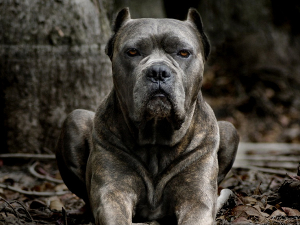

<!--Main layout-->
<main>

    <div class="container">
    


            <div class="row">


                <div class="col-lg-9 col-md-9 ">
                    <div class="">
                        <div class=" ">

                            <div class="">

                                <!--Section heading-->
                                <h1 class=" ">Собака Кане Корсо</h1>


<p>


Кане Корсо, это большая собака с выступающими мышцами. В данных типов собак длина корпуса переваливает высоту. Длина собак-для кобелей 64-68 см., и 60-64 см - длина для сук. Вес около 45-50 кг., и 40-45 кг., соответствующее. Собаки этих пород больших размеров. <br>

Череп объёмистый и продолговатый, длиннее чем лицо, соотношения 1: 2. Лоб с передней части выпуклый и ровный с затылочных стороны. Ноздри также достаточно большие и черные. Губы отвисшие перекрывают нижнюю челюсть. Челюсть разгониста.
</p>
<p>
Глаза выразительные, темные и овальной формы. Частично возможны и светлые глаза, но темный окрас является доминирующий. Глаза внимательны и выражены.Уши с обширным основанием и глубоко посаженные, тригональной формы, их укорачивают до вида треугольника. Шея амбалиста, по длине как голова.
</p>
<p>
Корпус с демонстрированной холкой, прочный. Загривок превышает уровень пожилого крупа. Славно развита грудная клетка. Хвост у данной породы высоко посажен, и у основания есть плотным, экипируется у 4-го позвонка. В возбужденной обстановке поднимается, однако не скручивается и не занимает вертикальное положение.
</p>
<p>
Собаки двигаются широко. Передние лапы продолговато  мускулистые
и  с большими плечами и большими пястьями.  А задние лапы характеризуются большим по длине бедром, сухой голенью, показанным скакательным суставом. Кожа очень прочная. Шерсть блестящая, не длинная, подшёрсток у этой породи слабо выражен. Цвет обычно черный, но допускаются различные оттенки, обычно это серые, рыжие и тигровые. На лапах и груди возможны светлые пятна. На морде необходимо чтоб была маска темного цвета, черного или серого, которая захватывает глаза, если окраска не данных цветов.
</p>
<p>
Поскольку порода еще продолжает формироваться, а стандарт есть новоиспеченным то встречается несколько типов кане-корсо. Конфликты между экспертами о кое-каких нюансах данных собак довольно часто присутствуют на выставках, в том числе о нормах и дозах перекуса. Забавным фактом есть соотношение между цветом и неординарностью экстерьера, что является предлогом для представления собак одного украшение на площадках.
</p>
<h2>Кане Корсо Видео</h2>
<div class="video">
    
<iframe  height="480" src="https://www.youtube.com/embed/sUoSeCYUJTw" frameborder="0" allowfullscreen></iframe>
</div>


                            </div>
                        </div>
                    </div>
                </div>

                <div class="col-lg-3 col-md-3 ">
          
                </div>


                </div>
                </div>
</main>